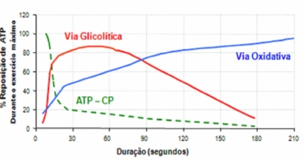

CLIENTES - POLOS

Tenha acesso a provas sem fazer precisar fazer login. Para ter acesso a centenas de simulados de provas para estudar, tudo de forma rápida, simples e segura, faça o login com seu RA e senha. SAIBA MAIS
Disciplina: 706960 - FISIOLOGIA APLICADA A ATIVIDADE MOTORA
Questão 1: “O sistema nervoso usa potenciais de ação (impulsos nervosos) para regular as atividades corporais; detecta as alterações nos ambientes externos e internos do corpo, interpreta essas alterações e responde a elas por causar contrações musculares ou secreções glandulares” (TORTORA, G. J.; GRABOWSKI, S. R. Princípios de anatomia e fisiologia. 9. ed. Rio de Janeiro: Guanabara Koogan, 2002. p. 5.). Com base no texto e nos conhecimentos sobre o tema, analise as afirmativas a seguir: I. O sistema nervoso periférico autônomo tem por função controlar a atividade dos sistemas digestivo, cardiovascular, excretor e endócrino. II. O cerebelo é o principal centro integrador entre os sistemas nervoso e endócrino, e o hipotálamo é o responsável pela manutenção da postura corporal. III. Destacam-se como substâncias que atuam como neurotransmissoras: a acetilcolina, a adrenalina,a noradrenalina. IV. A presença da bainha de mielina, que recobre a maioria dos axônios, além de proteger o axônio,facilita a propagação do impulso nervoso. Assinale a alternativa que contém todas as afirmativas corretas. A) I e II. B) II e IV. C) III e IV. D) I, II e III. E) I, III e IV.
Questão 2: O exercício em ambiente quente e úmido aumenta o risco de ocorrência dos males induzidos pelo calor, visto que a resposta sudorípara pode diminuir, levando a um aumento da velocidade de armazenamento do calor e ao desenvolvimento da INTERMAÇÃO. Essa é decorrente da dificuldade do corpoem se resfriar adequadamente em um ambiente com calor excessivo, sendo considerada uma emergência clínica com alto risco de morte. A intermação relacionada ao exercício pode ser prevenida por meio de adequada aclimatização do atleta, além de hidratação e vestuário apropriados. Entre suas complicações, podemos citar: I -Complicações musculares (rabdomiólise). II -Complicações renais (insuficiência renal aguda). III -Complicações pulmonares. IV -Complicações cardíacas. Está correta a alternativa: A) Apenas a alternativa I. B) II, IIII e IV. C) III e IV. D) Apenas a alternativa IV. E) I, II, III e IV.
Questão 3: Quando uma pessoa encosta a mão em um ferro quente, ela reage imediatamente por meio deum reflexo. Nesse reflexo, o neurônio efetuador leva o impulso nervoso para: A) A medula espinhal. B) O encéfalo. C) Os músculos flexores do braço. D) As terminações sensoriais de calor na ponta dos dedos. E) As terminações sensoriais de dor na ponta dos dedos.
Questão 4: “O ecstasy é uma das drogas ilegais mais utilizadas atualmente, conhecida como a ‘pílula-do-amor’, possui uma substância chamada MDMA -metilenodioximetanfetamina -que atua sobre três neurotransmissores: a serotonina, a dopamina e a noradrenalina. O mais atingido é a serotonina, que controla as emoções e também regula o domínio sensorial, o domínio motor e a capacidade associativa do cérebro. O MDMA provoca uma descarga de serotonina nas células nervosas do cérebro para produzir os efeitos de leveza e bem-estar; porém,a serotonina também é reguladora da temperatura do corpo, podendo causar hipertermia ou superaquecimento do organismo, sendo esta a principal causa de morte dos usuários.” Em relação aos neurotransmissores, analise as afirmativas abaixo: I. Os neurotransmissores são transportados através dos neurônios e liberados na fenda sináptica, onde dão origem ao impulso nervoso da célula. II. Nos neurônios, o potencial de ação tem sentido unilateral e invariável -dendrito > corpo celular > axônio -não ocorrendo nunca em sentido contrário. III. Os neurotransmissores são transportados pela corrente sanguínea e atuam em órgãos específicos, denominados órgãos-alvo. Marque a opção que julgar verdadeira: A) I está correta. B) I e III estão corretas. C) III está correta. D) I e II estão corretas. E) I, II e III estão corretas
Questão 5: O processo pelo qual o organismo pode converter substâncias não glicídicas (como aminoácidos, lactato, piruvato, glicerol e propionato) em glicose ou glicogênio é chamado de:A) Betaoxidação. A) Betaoxidação. B) Lipólise. C) Glicogênese. D) Lipogênese. E) Gliconeogênese.
Questão 6: Aclimatação é uma adaptação fisiológica gradual em respostas a mudanças ambientais relativamente duradouras. Sobre esse processo é correto afirmar: A) Um exemplo de aclimatação é quando mergulhamos em altas temperaturas e para compensar a dificuldade de sobrevivência no local, nosso organismo produz mais glóbulos brancos e altera a taxa respiratória e a eficiência na captação de oxigênio. B) Em mulheres, a aclimatação pode promover uma sudorese menor que em homens e suam em maior temperatura em regiões cutâneas e centrais. C) Em homens promove maior sudorese, havendo o esfriamento principal pelo processo de condução. D) A capacidade de realizar exercício não se altera durante a aclimatação. E) Não existe diferença entre um atleta e um sedentário quanto ao processo de aclimatação.
Questão 7: Avalie as seguintes afirmações e assinale a única alternativa que corresponde à predominância das vias de obtenção de energia para as três atividades descritas: “Num primeiro momento, um indivíduo estava em repouso em casa. Posteriormente, ele iniciou uma caminhada leve por 5 minutos até o ponto de ônibus. Chegando próximo deste ponto ele teve de realizar uma corrida máxima por cerca de 10 segundos.” A) Via anaeróbia alática, via anaeróbia lática, via ATP-CP B) Via aeróbia, via aeróbia, via anaeróbia lática C) Via aeróbia, via aeróbia, via anaeróbia alática D) Via ATP-CP, via aeróbia, via anaeróbia alática E) Via aeróbia, via anaeróbia lática, via ATP-CP
Questão 8: Existe uma quantidade limitada de ATP em cada célula muscular. Constantemente, o ATP é utilizado e regenerado. Três são os processos comuns para produção de ATP. O gráfico a seguir demonstra a utilização dos sistemas de acordo com a duração do exercício realizado. Assim, se atenha ao gráfico a seguir, identifique as vias metabólicas e escolha a alternativa correta quanto à interpretação do gráfico.  A) Com o aumento da duração do exercício físico ocorre uma maior reposição de ATP pela via oxidativa. B) A via oxidativa é a que menos utilizou ATP, uma vez que os estoques foram rapidamente utilizados. C) A via glicolítica mostra uma queda de ATP após o exercício intenso acima de 120 segundos. D) A via ATP-CP é a que mais se destaca, pois a utilização de ATP é intensa até os 180 segundos deexercício. E) Não existe diferença na utilização de ATP entre as três vias ao atingir 90 segundos de exercício.
Questão 1: O Potencial de Ação (PA) é o sinal que a célula neural usa para se comunicar com outras células. Explique o que caracteriza esse sinal.
Questão 2: O Potencial de Repouso da Membrana (PRM) é uma característica fundamental para que o neurônio possa gerar um potencial de ação. Quando está em repouso, há uma diferença de carga elétrica de 70 mV entre o citoplasma celular e o meio externo. Explique quais os fatores que determinam a existência do potencial de repouso da membrana neuronal.
O Gerenciador completo do seu Polo
Se existe algo que tira a paciência e o sono de qualquer gestor em um negócio, é a demora para obter respostas que deveriam estar disponíveis rapidamente para auxiliar não somente em tomada de decisões como em ações comerciais que tragam dinheiro para a empresa.
Saiba mais
Rua Júlio Câmara, 706 - Anexo 1 - Centro, Afogados da Ingazeira - PE, 56800-000